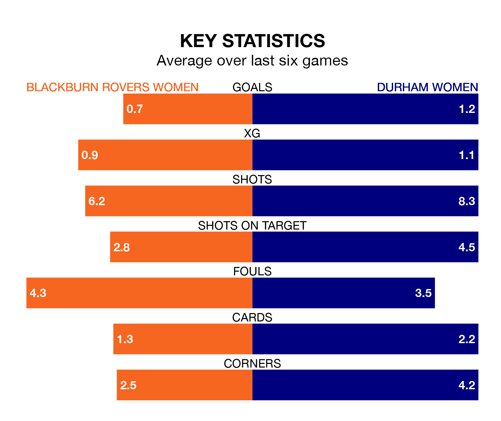

Blackburn Rovers Women host Durham Women on Sunday at the Lancashire FA County Ground in the FA Women's Championship.
In their last league match, on February 18, Blackburn Rovers lost to Crystal Palace Women 4-0 away.
Durham drew, 2-2 away at London City Lionesses, with Amy Andrews and Sarah Cathryn Ann Robson on the scoresheet.
With Alexandra Brooks between the sticks, Blackburn Rovers can rely on one of the league's safest pair of hands. She has kept five clean sheets in her 14 appearances this season, and only one other 'keeper – Sunderland Women's Claudia Moan – has been able to prevent the opposition scoring on more occasions in the FA Women's Championship.
In Durham's net, Naoisha McAloon has two clean sheets in seven games. She has conceded a goal every 37 minutes, 70% more often than the 63 minutes between goals for Brooks.
In the last 10 years, Blackburn Rovers and Durham have played each other on 12 occasions. Blackburn Rovers won one of them, Durham nine, and they drew twice.
On average, Blackburn Rovers scored 0.9 goals and Durham 2.1 in those matches.
Their last meeting was on October 22, when Durham won 2-1 at home.
The hosts are in disappointing form in the FA Women's Championship, with two wins and four losses from their last six games.
With a win and two draws over that period, the away side's form is slightly worse – they have taken five points from 18, compared to Blackburn Rovers' six.
With 11 goals in 14 games so far this season, Blackburn Rovers are the league's lowest scorers with 0.8 goals per game. And they are conceding more than average, letting in 22 goals at a rate of 1.6 per game.
Durham are also below average scorers, with 1.1 goals per game, compared to a league average of 1.4. They have conceded 1.9 goals per game.
The home team are seventh in the table after 14 games, of which they have won six and lost eight, earning 18 points.
Durham are one place ahead of Blackburn Rovers in sixth, with five wins and four draws putting them on 19 points.
Updated: 10:08 (UTC), 23/02/24